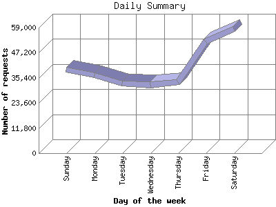

The Daily Summary identifies the level of activity as a total for each day of the week. This summary also compares the level of activity on weekdays and weekends as a total for the report time frame.

| Day of the week | Number of requests | Number of page requests | |
|---|---|---|---|
| 1. | Sunday | 39,280 | 20 |
| 2. | Monday | 36,679 | 58 |
| 3. | Tuesday | 32,701 | 19 |
| 4. | Wednesday | 32,056 | 72 |
| 5. | Thursday | 33,368 | 21 |
| 6. | Friday | 52,477 | 1 |
| 7. | Saturday | 58,490 | 73 |
| Total Weekdays | 187,281 | 171 | |
| Total Weekend | 97,770 | 93 | |
This report was generated on May 11, 2011 03:37.
Report time frame July 27, 2010 14:23 to May 10, 2011 23:34.
| Web statistics report produced by: analog 6.0 / Report Magic 2.21 |